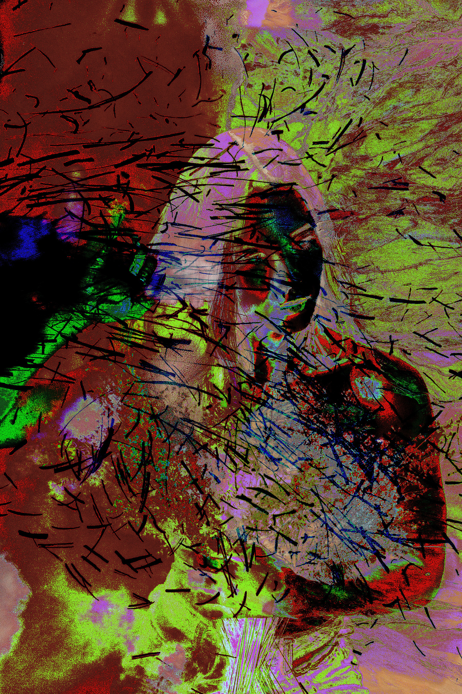
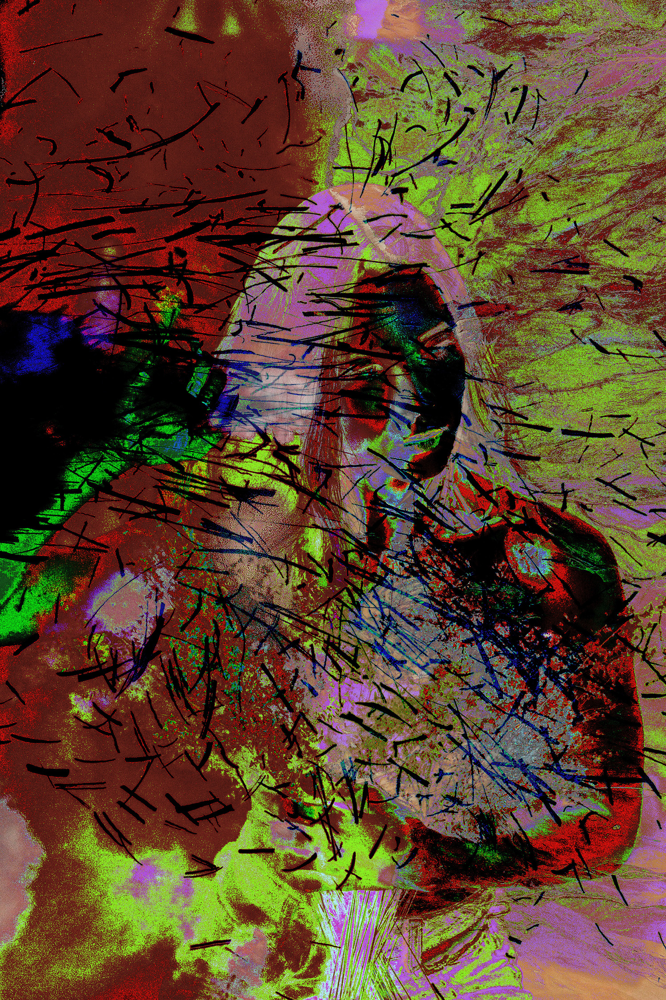
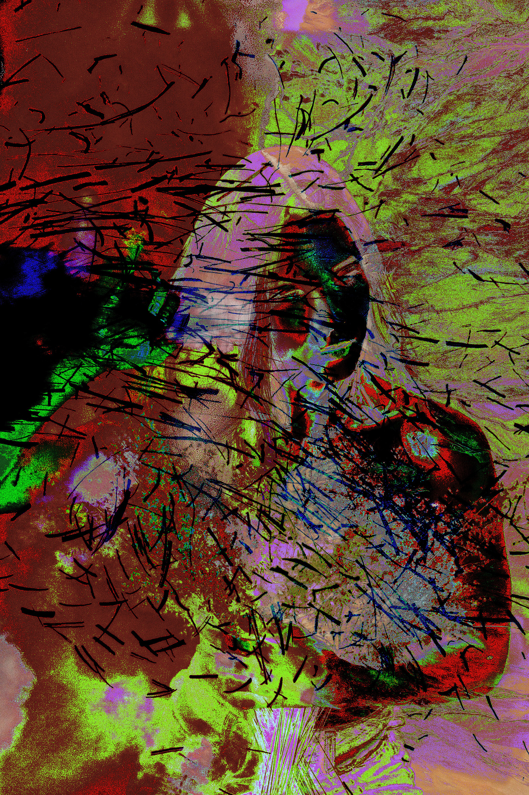

Xareni Uriostegui
Not What It Seems II
In this series of work I created work based on a collage of portraits and outside elements to create distorted surreal glitched artwork. These portraits were once beautiful, but now create something that has never been seen before. The element of having no control over the glitch is something that I am not used to because I am an artist that needs to have control over my art. As an artist, I am aiming to create work that will draw the viewer in to look closer because my work is not what it seems.
As a photographer I aim to create images that are elegant and show the personality of the individual in the photo, but with glitch art it’s a technique that I am not familiar with and I am quite fascinated with the results. The title of the collection of work is Not What It Seems II because these images are not what they originally seemed to be when I first opened them.
